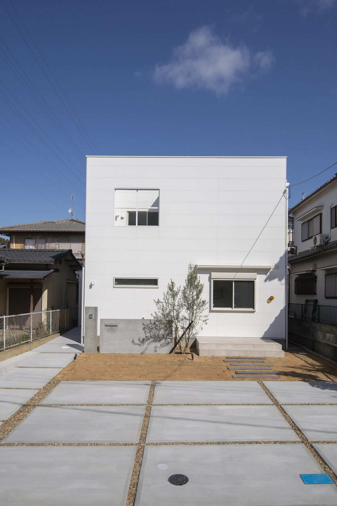
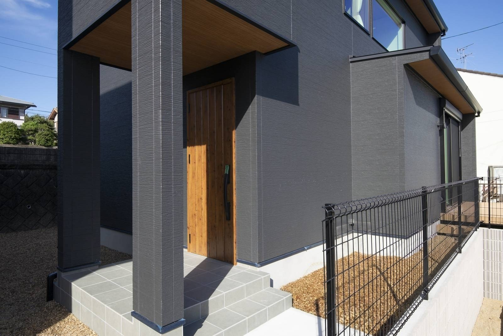
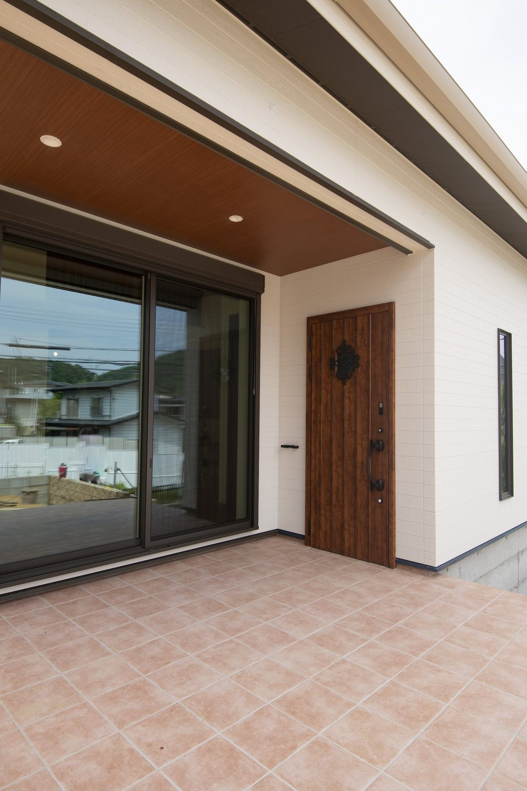

私も現場でよく見ますが、建物の見積もりが出たあとに「外構は別です」と言われて、そこで資金計画を組み直す方が多くいらっしゃいます。

外構というのは建物の外まわり一式のことで、駐車場や玄関までの通り道、フェンス、門柱とポスト、庭など、住みはじめてから毎日使う場所ばかりです。
それなのに資金計画のいちばん最後に回されてしまって、残った予算の中で決めることになりがちです。
外構の費用は、いくらかかるのか
全国の調査では、新築の外構工事の平均金額が2025年に初めて200万円を超えました。
いちばん多い価格帯は200万〜249万円です。
150万円以上をかけた方が、全体の半数を超えています。
以前は「外構は100万円くらい」とよく言われましたが、資材と人件費が上がった今は、その金額では収まりません。
これは一般的な目安ですが、土地の形と道路との高低差で大きく動きます。
高低差のある土地なら擁壁や階段が加わって300万円を超えることもあります。
なぜ本体価格に、入れられないのか
外構の金額は土地が決まらないと出せません。
同じ建物でも土地が変われば金額がまるで変わるからです。
- 敷地の広さ建物の外に残る面積が、そのまま仕上げる面積になります
- 道路との高低差差があるほど、土を留める工事と階段が要ります
- 前の道路の幅狭いと材料を運ぶ手間が増え、その分が金額に乗ります
- 隣の家との距離近いほど、目隠しをどこまでやるかの判断が要ります
「込み」と書いたほうが総額は安く見えますが、それでも分けて書くのは、あとから費用が増えるほうがお困りになるからです。
最初の見積もりでは、「この金額に入っていない費用を全部教えてください」と聞いてください。
外構でつまずかない、5つの注意点
お引き渡しから3年たったお客様のお宅へ、外構のアフター点検に伺ったときのことです。
暮らしが変わると外まわりに求めるものも変わっていましたので、シバサンホームでは最初からあとで変えられる余地を残しておきます。
そのために見ておきたい点が、次の5つです。
1. 素材は「何年もつか」で選ぶ
ウッドデッキや木の目隠しは、見た目がやわらかくて人気がありますが、木を使うなら地面に直接ふれる形で施工しないでください。
湿気を吸った木が地面と接していると、家のまわりにシロアリを呼ぶ大きな原因になります。
木を選ぶなら、数年ごとの塗り直しも予定に入れてください。
手間をかけられない場合は最初からアルミやステンレスの材料を選んで、見た目だけで決めずに値段と寿命と手間を並べて選びます。
2. 雨水の抜け道を、先に決める
外構でいちばん多い後悔は水たまりですので、敷地の広さと土の質を見て、水がどこへ流れるかを先に決めます。
粘土の多い土なら、排水の設備を足すことも考えます。
駐車場のコンクリートにも水を流す勾配が要りますが、ここで気をつけたいのは傾けすぎることです。
傾きが強いと停めた車のドアが開いてしまいますので、水を流しながら傾けすぎないように、その加減は事前の計画で決めます。

手元は隠しながら、人の動きは外から見えるようにしています。
3. 塀で囲むと、かえって危ないことがある
家の中が外から丸見えなのは落ち着きませんが、だからといって敷地を高い塀でぐるりと囲むと別の問題が起きます。
一度入られたとき、その塀が身を隠す場所になります。
おすすめは、少しだけ見通しの残る目隠しで、格子や植栽で視線を切りつつ、人の動きは道路から分かるようにします。
防犯の考え方は、動画でも大工社長が話しています。
4. 毎日の動線を、図面でたどる
図面ができたら、荷物を持ったつもりで敷地を歩いてみてください。
- 買い物から帰って、車を降りて、玄関に着くまで
- 宅配の方が、ポストに届けて帰るまで
- 自転車を出して、道路に出るまで
- ごみ袋を持って、外に出すまで
物置、給湯器、エアコンの室外機の位置もこの時に決めます。
あとから置き場所を探すと、いちばん通る場所をふさぐことになります。
5. 10年後に、誰が手入れをするか
植栽で家の印象は大きく変わりますが、同時に毎年の落ち葉と草刈りがついてきます。
葉の落ちにくい常緑の木を選んで、草の生える面積を減らし、木の材料をやめて塗り直しの要らない材料に変えると、こうした選び方であとの手間はずいぶん軽くなります。

外構を決めるのは、間取りと同じ時期です
外構は最後の工事ですが、決めるのは最後ではありません。
駐車場をどこに取るかで玄関の位置が決まり、玄関の位置が決まると家の中の動線が決まります。
地面の高さは基礎の高さと一緒でないと決められません。
間取りの打ち合わせと同じ時期に、外まわりの計画も一緒に決めます。
工事を分けるのは構いませんが、計画だけは、最初にまとめて立てておきます。
これがいちばん安く済みます。
まとめ
- 外構は建物の本体価格と別途ですので、150万〜300万円をみておきます
- 金額は敷地の広さ・高低差・道路の幅・隣家との距離で動きます
- 木を使うなら地面に接触させないようにしてください。シロアリを呼ぶからです
- 駐車場は水を流しますが、傾けすぎるとドアが勝手に開きます
- 高い塀は視線を消すかわりに、隠れる場所をつくります
- 工事は分けてよいですが、計画だけは間取りと同時に立てます

奈良の工務店シバサンホームで、
土地さがし・資金計画・打合せの窓口をしています。
モットーはスピード・誠実さ・楽しさ。